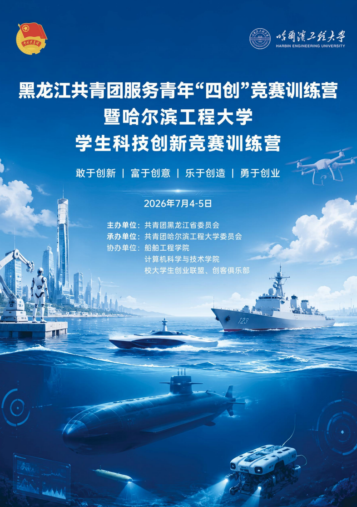
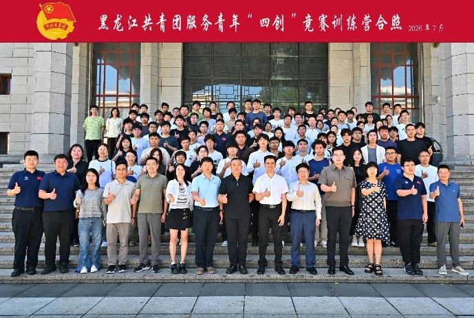
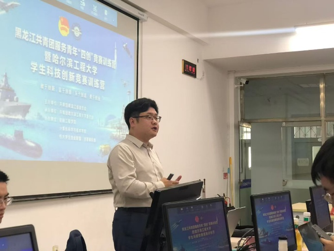
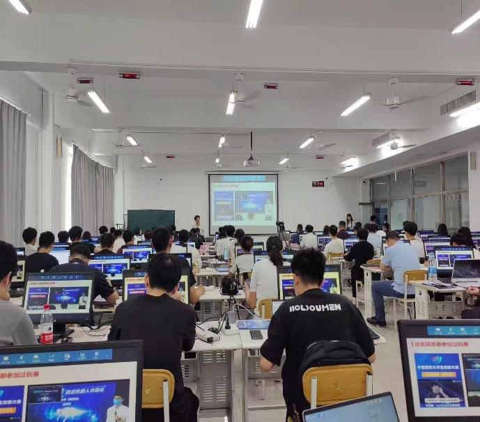
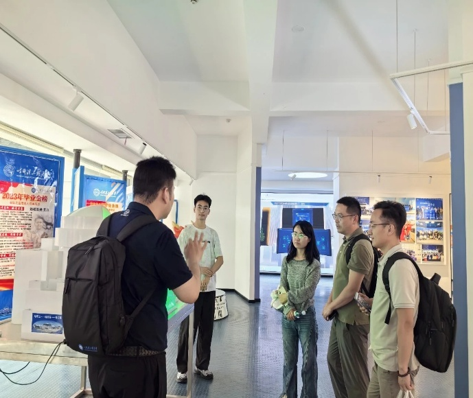

创新创业教育培训





2026年7月4—5日，黑龙江共青团服务青年"四创"竞赛训练营暨哈尔滨工程大学学生科技创新竞赛训练营成功举办，活动由团省委主办，全省16所院校共同参与
训练营由共青团黑龙江省委主办、哈尔滨工程大学承办，秋叶团队提供课程设计与教学支持。围绕“敢于创新、富于创意、乐于创造、勇于创业”的“四创”主题，采用专题讲授、实战演练与竞赛辅导相结合模式，助力团队优化项目方案、提升竞赛实力。活动覆盖全省16所院校，成效获主办方与师生认可
创新创业赋能
以本项目为示范，秋叶团队相继与西北工业大学、西安理工大学等高校合作开展国创赛训练营，并为哈尔滨工程大学定制青年教师教学竞赛培训项目，形成高校竞赛培训领域的系列化服务。
辐射效应